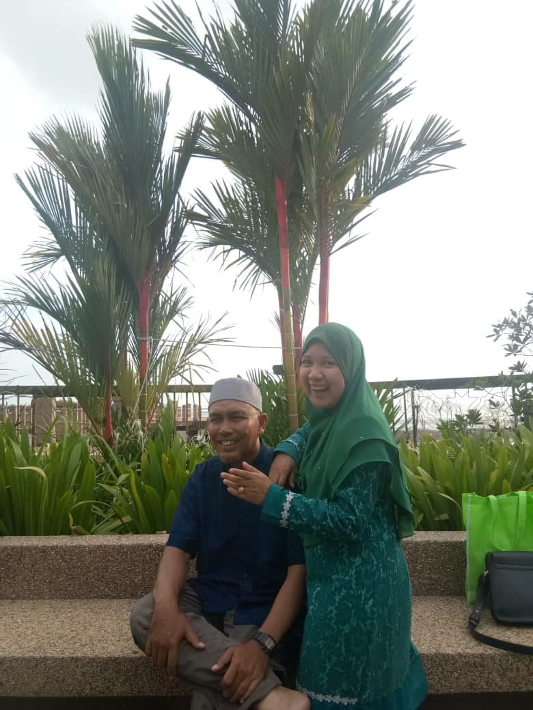
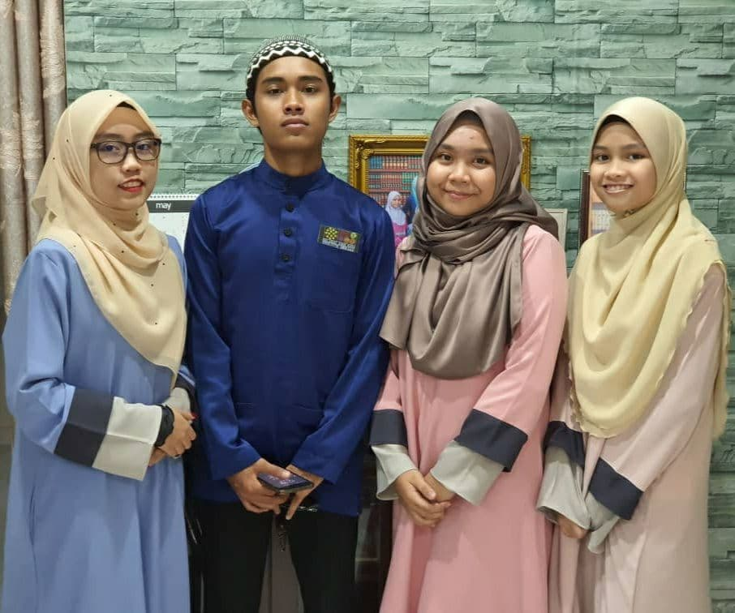

They are my main source of success. They are also the place where I express all my feelings and problems. They are also the fuel for my spirit to continue to face all trials in order to make them proud. Without them, I would be a weak and helpless person in this world. They are my family that I love and cherish.

This is the King and Queen in my heart. My father and mother are very concerned about the needs of the family and they are the source of family income. That is why I as the eldest child want to reward the good services of my parents with success that can make them happy. I really can’t imagine what my life would be like without them one day.

This is the light of the eyes of this family. I am the eldest child, Luqman (blue shirt) is the second child, Fahimah (brown shawl) is the third child and the youngest is Fahmidah (right side). We have chemistry each like me with Luqman and Fahimah with Fahmidah. Even though we have a slightly older age gap, we are able to brighten up the atmosphere of the house and relieve the tiredness of our parents working by cooking and doing housework well. Without my siblings, my life would have been lonely and gloomy.